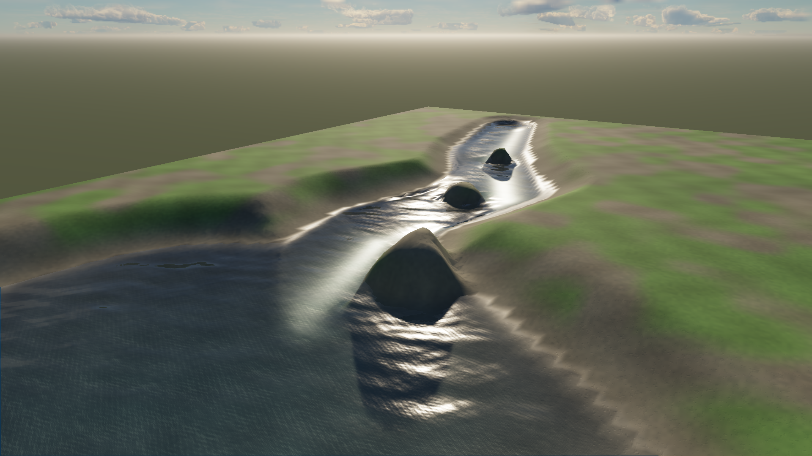
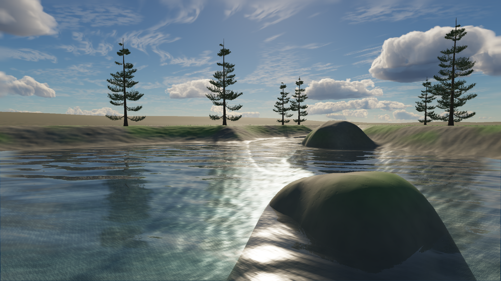
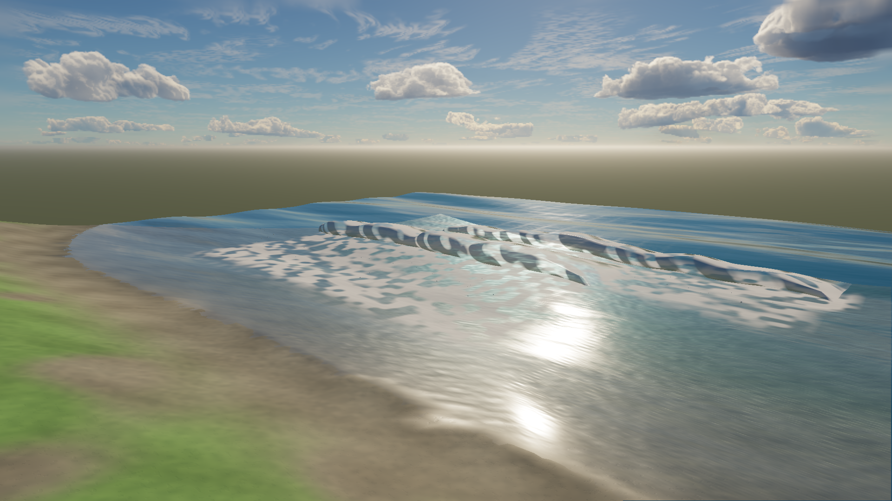

Water with foam memory and finer contact.
Working changes to source authoring, fluid simulation, optical response and compiler-selected resources. Hardware captures from the shipped rendering path.
Implementation landed; AAA sign-off remains open. Crest physics, foam, wet banks, local effects, reflections and resource sharing are working. The surf and environment still need visual refinement, and the water GPU budget remains unmet.
Corrected crests and persistent whitewater
Before · research baseline

After · implemented renderer
{kind=link}
Sea state and independent swell can now be authored separately. Foam persists after crest compression and disperses over time.
The source camera and daylight setup match the earlier ocean fixture; other ongoing sky-rendering changes are visible. This is not an isolated pixel-difference experiment. It remains more expensive than the earlier ocean.
Separate the visible bank from the fluid solve
Before · diagnostic creek

After · same diagnostic camera
{kind=link}

Integrated quiet pool
{kind=link}

64² fluid and water geometry, 256² bed/contact. Vegetation and banks now contribute reflected structure; coarse off-screen proxies fill some missing-screen reflections. The bed and landscape still need a proper art pass.
Local sheets, spray, foam and run-up

Breaker and waterfall events compile into bounded geometry with independent clocks. Airborne sheets transmit the completed base water through a short optical path.
The prototype retains obvious sheet forms and repeated foam patterns. Its technical path is working; this is not yet the hero beach shot described in the research.
Ten seconds of camera motion and a ripple
Opaque and water now have separate histories. Compact water history applies a depth/identity-aware correction while retaining fine detail. All six frozen/moving ocean and creek checks passed; maximum frozen mean changes were below 0.000019/255. Water temporal supersampling and wave-specific motion tracking remain open.
The new clip is 640×384 visual evidence, not the 1080p spatial benchmark. History, orbit and motion checks.
Bandwidth and memory improved; GPU cost is still the hard part
| 1080p balanced / spatial | Frame GPU p50 | Frame GPU p95 | Fluid p95 | Water-owned memory |
|---|---|---|---|---|
| Ocean | 4.00–4.46 ms | 5.18–6.16 ms | — | 7.43 MiB |
| Creek, 128² | 13.80–14.16 ms | 15.34–16.12 ms | 1.9–2.2 ms | 23.09 MiB |
| Integrated pool, 64² | 15.14–15.20 ms | 15.86–15.99 ms | 0.3 ms | 27.73 MiB |
These source-stable measurements use spatial mode. Default/temporal now add compact water history: 19.78 MiB at 1080p. The integrated fixture projects to 47.51 MiB with history; its new GPU time has not been benchmarked.
Static contact stays resident; body and spectrum resources are shared; inactive fluid tiles are skipped. Fine banks no longer force a dense per-vertex water solve. Open ocean skips full-size optical snapshots.
Direct synthesis won the isolated experiment: 0.156 ms versus 0.299 ms for ocean phase recurrence. The current shader adds visual work and does not demonstrate an overall frame-rate improvement over the original baseline. The integrated fixture meets the provisional CPU-fluid and memory budgets on this adapter; the water GPU target and broader hardware certification remain open.
Apple/Metal, Chrome 153. ABBA runs, 45 warmup + 120 moving frames per leg. Off controls retain fluid and opaque scenery. Tiled GPU pass intervals overlap; whole-frame timings include the rest of the scene. All three final cases use the same frozen source. Raw summary · Synthesis experiment.